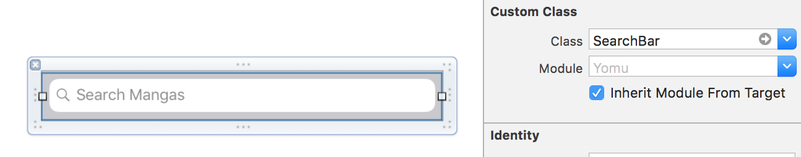
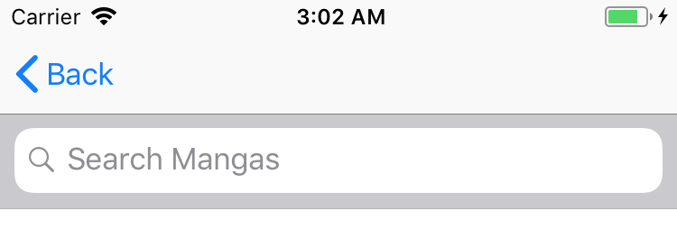
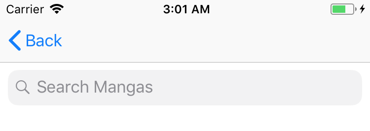
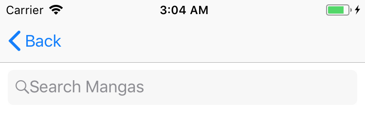
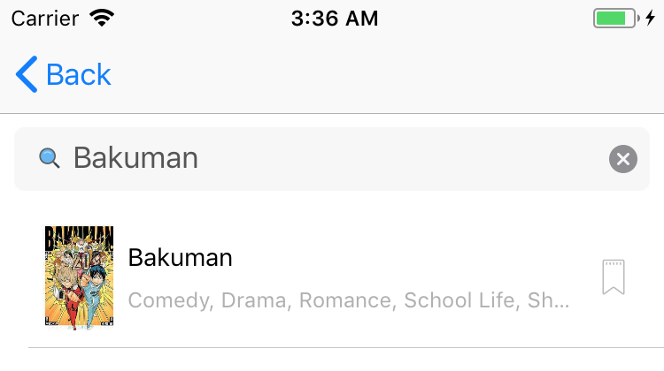

Customizing UISearchBar Search Icon
Feb 09, 2018
Sometimes we want to customize the search icon of a UISearchBar for iOS, one way to do this is by creating a subclass of UISearchBar and customize the search icon inside its willMove(toSuperView:) method.
I had 2 tasks:
- Set border radius for
UISearchBar - Set custom search icon for
UISearchBar
Initial State
First, we need to subclass UISearchBar, let’s create one
import UIKit
class SearchBar: UISearchBar {
override func willMove(toSuperview newSuperview: UIView?) {
super.willMove(toSuperview: newSuperview)
// We'll fill this later~
}
}Then set your search bar class to SearchBar

Let’s take a look at our initial state, our SearchBar should look like this

UISearchBar Minimal Style
UISearchBar has searchBarStyle property, we’ll set that with UISearchBarStyle.minimal, this tells UISearchBar to remove its background
override func willMove(toSuperview newSuperview: UIView?) {
super.willMove(toSuperview: newSuperview)
searchBarStyle = UISearchBarStyle.minimal
}
Borderless UISearchBar
Next, we’ll remove text field border and set some styling
override func willMove(toSuperview newSuperview: UIView?) {
super.willMove(toSuperview: newSuperview)
searchBarStyle = UISearchBarStyle.minimal
// Configure text field
let textField = value(forKey: "_searchField") as! UITextField
// This will remove the border style, we need to do this
// in order to configure border style through `textField.layer`
// otherwise we'll have 2 borders.
// You can remove `textField.borderStyle = .none` to see it yourself.
textField.borderStyle = .none
textField.backgroundColor = UIColor(hex: "#F7F7F7")
textField.clipsToBounds = true
textField.layer.cornerRadius = 6.0
textField.layer.borderWidth = 1.0
textField.layer.borderColor = textField.backgroundColor!.cgColor
textField.textColor = UIColor(hex: "#555555")
}
Customizing Search Icon
Now we need to customize the search icon
override func willMove(toSuperview newSuperview: UIView?) {
super.willMove(toSuperview: newSuperview)
searchBarStyle = .minimal
// Create search icon.
let searchIcon = UIImageView(image: <your search icon goes here>)
let searchImageSize = searchIcon.image!.size
// I'm adding some padding to the image
searchIcon.frame = CGRect(
x: 0,
y: 0,
width: searchImageSize.width + 10,
height: searchImageSize.height
)
// Default value is `UIViewContentMode.scaleToFill`,
// it'll stretch the search icon, we don't want that,
// we want to center the search icon instead.
searchIcon.contentMode = UIViewContentMode.center
// Configure text field
let textField = value(forKey: "_searchField") as! UITextField
textField.leftView = searchIcon
textField.borderStyle = .none
textField.backgroundColor = UIColor(hex: "#F7F7F7")
textField.clipsToBounds = true
textField.layer.cornerRadius = 6.0
textField.layer.borderWidth = 1.0
textField.layer.borderColor = textField.backgroundColor!.cgColor
textField.textColor = UIColor(hex: "#555555")
}The end result should look like this

You can find the full code here